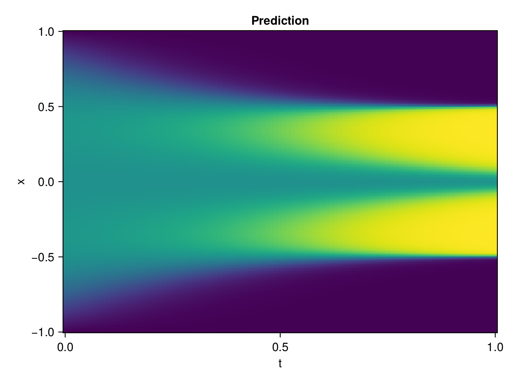

Allen-Cahn Equation with Sequential Training
In this tutorial we are going to solve the Allen-Cahn equation with periodic boundary condition from $t=0$ to $t=1$. The traning process is split into four stages, namely $t\in [0,0.25]$, $t\in [0.0,0.5]$, $t\in [0.0,0.75]$ and $t\in [0.0, 1.0]$.
using ModelingToolkit, IntervalSets
using Sophon
using Optimization, OptimizationOptimJL, Zygote
@parameters t, x
@variables u(..)
Dₓ = Differential(x)
Dₓ² = Differential(x)^2
Dₜ = Differential(t)
eq = Dₜ(u(x, t)) - 0.0001 * Dₓ²(u(x, t)) + 5 * u(x,t) * (abs2(u(x,t)) - 1.0) ~ 0.0
domain = [x ∈ -1.0..1.0, t ∈ 0.0..0.25]
bcs = [u(x,0) ~ x^2 * cospi(x),
u(-1,t) ~ u(1,t)]
@named allen = PDESystem(eq, bcs, domain, [x, t], [u(x, t)])\[ \begin{align} - 0.0001 \frac{\mathrm{d}}{\mathrm{d}x} \frac{\mathrm{d}}{\mathrm{d}x} u\left( x, t \right) + \frac{\mathrm{d}}{\mathrm{d}t} u\left( x, t \right) + 5 u\left( x, t \right) \left( -1 + \left|u\left( x, t \right)\right|^{2} \right) =& 0 \end{align} \]
Then we define the neural net, the sampler, and the training strategy.
chain = FullyConnected(2, 1, tanh; hidden_dims=16, num_layers=4)
pinn = PINN(chain)
sampler = QuasiRandomSampler(500, (300, 100))
strategy = NonAdaptiveTraining(1, (50, 1))
prob = Sophon.discretize(allen, pinn, sampler, strategy)OptimizationProblem. In-place: true
u0: ComponentVector{Float64}(layer_1 = (weight = [-1.675855040550232 0.013991759158670902; 0.11890585720539093 -0.17321725189685822; … ; 1.0305196046829224 -0.8904150724411011; -0.1877000480890274 0.803719699382782], bias = [0.0; 0.0; … ; 0.0; 0.0;;]), layer_2 = (weight = [-0.4832836985588074 0.575059711933136 … 0.5227915048599243 0.015075024217367172; -0.04717188701033592 -0.23267298936843872 … -0.30488693714141846 -0.09390939772129059; … ; 0.3274517357349396 -0.3305901885032654 … -0.5057084560394287 -0.20661607384681702; 0.12178674340248108 -0.6751412749290466 … 0.6290369629859924 0.32774966955184937], bias = [0.0; 0.0; … ; 0.0; 0.0;;]), layer_3 = (weight = [0.15159910917282104 -0.09292932599782944 … -0.16716933250427246 -0.3653111755847931; 0.6897041201591492 0.4412379562854767 … 0.7197545766830444 0.17477662861347198; … ; -0.6172871589660645 -0.13958458602428436 … 0.09753624349832535 0.11934997141361237; -0.42333582043647766 0.7139235138893127 … -0.537486732006073 0.5070822834968567], bias = [0.0; 0.0; … ; 0.0; 0.0;;]), layer_4 = (weight = [0.34603461623191833 0.642100989818573 … 0.16541944444179535 0.38964831829071045; -0.17467260360717773 -0.1689639687538147 … -0.42067089676856995 0.7077552080154419; … ; 0.44912397861480713 -0.5628489851951599 … 0.2963615357875824 -0.04724251851439476; -0.5729332566261292 -0.3836739957332611 … -0.05677950009703636 -0.1372711956501007], bias = [0.0; 0.0; … ; 0.0; 0.0;;]), layer_5 = (weight = [0.41775572299957275 0.5219136476516724 … -0.017358481884002686 -0.08309080451726913], bias = [0.0;;]))We solve the equation sequentially in time.
function train(allen, prob, sampler, strategy)
bfgs = BFGS()
res = Optimization.solve(prob, bfgs; maxiters=2000)
for tmax in [0.5, 0.75, 1.0]
allen.domain[2] = t ∈ 0.0..tmax
data = Sophon.sample(allen, sampler)
prob = remake(prob; u0=res.u, p=data)
res = Optimization.solve(prob, bfgs; maxiters=2000)
end
return res
end
res = train(allen, prob, sampler, strategy)u: ComponentVector{Float64}(layer_1 = (weight = [-2.6896227587167827 -0.10671731938451462; 0.5416653489916382 0.4205189210695675; … ; 1.8544826133588241 -0.14704735664044988; -0.8416593187751679 0.8602333970684818], bias = [1.3509753520535441; -0.14261880295482876; … ; 0.8520523331904926; -0.6182968017144415;;]), layer_2 = (weight = [-0.1857816496898119 0.6113097520731222 … 0.11811847941770547 0.03711871411563686; -0.3114908435120659 -0.1944360540992718 … -0.18512209115933864 -0.3418606644743504; … ; 0.6544536967117573 -0.5579068791219133 … -0.953577631128737 -0.17308528855435606; 0.10930275754231955 -0.8776569116466464 … 0.675090726781289 0.3160555287118686], bias = [0.24708420244909393; -0.1637090581858523; … ; 0.5269467766799624; 0.14483293256072702;;]), layer_3 = (weight = [0.19900573632636914 -0.3620119967223608 … -0.2910557572651565 -0.30288385079953717; 0.822958962868935 0.7017697152969004 … 0.6975676574262287 -0.023144035961629686; … ; -0.5334962878223772 -0.3344711167471114 … 0.020493383553771668 0.2507056239476646; -0.9680337314468211 0.9758039686577772 … -1.0366586004237248 0.18299479463391188], bias = [-0.29536458882769817; -0.26392670888917186; … ; 0.19795783308185283; -0.42361712033363785;;]), layer_4 = (weight = [0.7384495430450544 1.0532775891987867 … 0.10320629995445327 0.964041490011045; -0.09865525442106149 0.008525840510207635 … -0.6328832701861058 0.6793044312173441; … ; -0.1840236871787509 -0.4339994998375164 … 0.3472699954756732 0.12472718485062152; -0.6430700974784915 -0.024799967802090442 … -0.042922420785654655 -0.30697188772746975], bias = [-0.5903536417540347; -0.3326581550760009; … ; -0.12729926979398903; -0.2728045686284299;;]), layer_5 = (weight = [0.6467834733970362 0.24224141614483174 … -0.32793616048934093 -0.1525551529705064], bias = [-1.2362386822942113;;]))Let's plot the result.
using CairoMakie
phi = pinn.phi
xs, ts = [infimum(d.domain):0.01:supremum(d.domain) for d in allen.domain]
axis = (xlabel="t", ylabel="x", title="Prediction")
u_pred = [sum(pinn.phi([x, t], res.u)) for x in xs, t in ts]
fig, ax, hm = heatmap(ts, xs, u_pred', axis=axis)